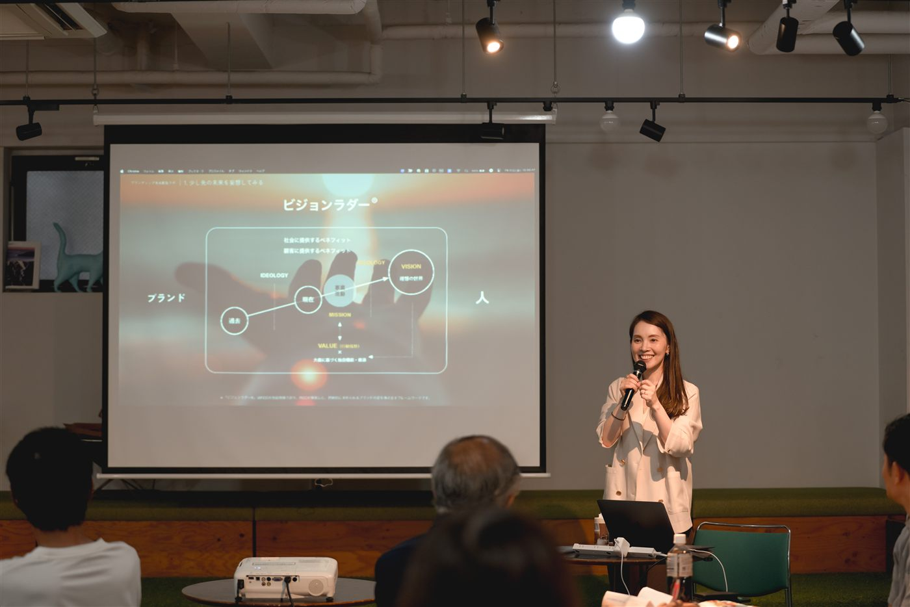
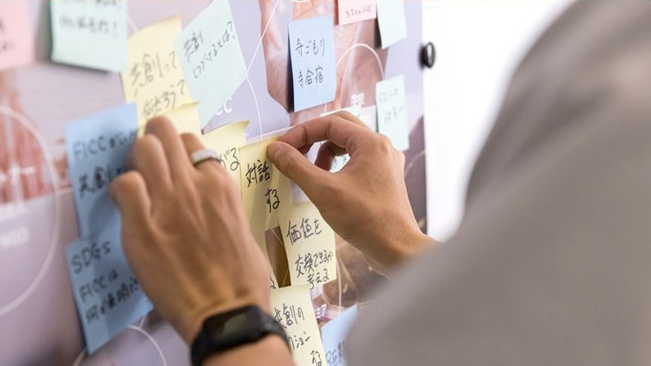
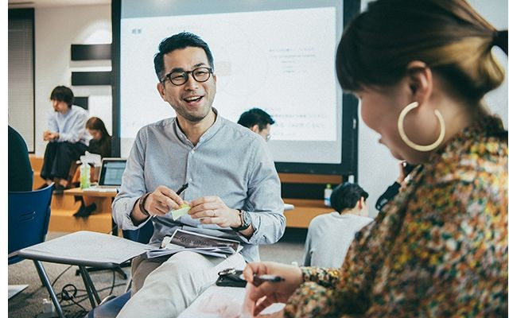
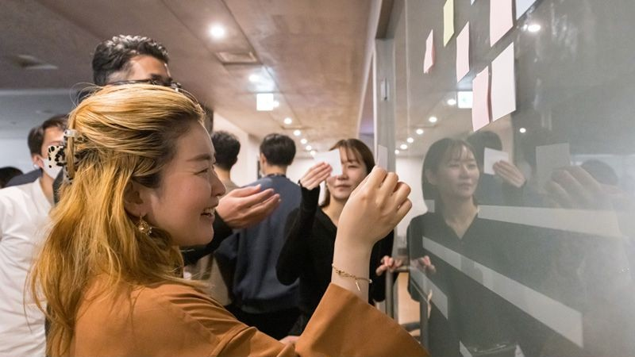
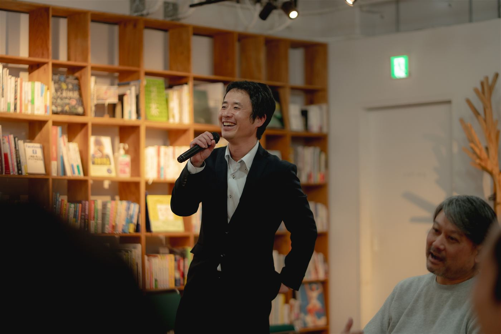
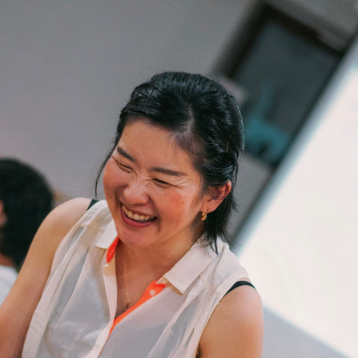

×
ブランディング未来創造ラボ FY26
企業の価値や強み、資源を見つめ直し、経営・事業・営業・採用・発信につなげる実践プログラム。
自社の未来を創る次の一歩を、ここから。
自社の強みをうまく言語化できない
新しい事業の軸が定まらない
営業資料に自社らしさが出ない
採用で魅力が伝わりにくい
発信の方向性がばらつく
既存事業を見直したい
ブランドの視点から自社の価値を再解釈し、事業戦略から人材戦略まで、打ち手のなかった課題に新たな変革の糸口を見出します。テーマは企業ごとに異なり、同じアウトプットをつくるのではなく、自社に合った課題に取り組みます。
経営計画・事業計画・事業構想を描く
営業資料・提案資料・発信方針を整える
採用計画・採用メッセージをつくる
新規事業や連携企画を形にする
ブランドマーケティングの基本を学びながら、自社の価値や課題を見つめ直す1日集中プログラム。
各社のテーマに沿って、FICCや参加企業と対話しながら解決策を具体化する少人数制プログラム(選抜制)。
参加者のネットワークを持ち寄り、新たな共創や事業の可能性を探る対話の場。
※1DAY勉強会参加者、およびCamps・FICCからのご案内者限定で「実践コース［ラボ］」「共創交流会」にご参加いただけます。
対話を軸に、自社の価値を再発見し、未来の一歩をつくります。
横にスクロールできます →
自社の価値や課題を書き出す
参加者や専門家から問いを受ける
率直に話し合い、学び合う
新しい視点や気づきを得る
気づきをテーマに落とし込む
打ち手や資料の形にする
経営の中でブランド価値を高めたい、長期的な視点で事業を成長させたい方
事業の方向性や成長戦略を見直し、具体的な打ち手を探したい方
新しい価値や事業の可能性を検証し、社内外との共創を通じて形にしたい方
自社の価値や魅力を効果的に伝え、社内外の共感や行動につなげたい方
事業やサービスの価値を再定義し、差別化や成長のポイントを見つけたい方
地域の資源や魅力を活かした新たな価値づくりや事業化を目指したい方
ブランドの存在目的である大義や価値を見つめ直し、共感や信頼を生む"意味"をつくります。
意味を持ったブランドが社会に届く仕組みを設計し、選ばれる市場や関係性をつくります。
参加者同士が対話し、考え、深め合いながら、自社の価値や未来を描いていきました。

ブランドの本質や価値、マーケティングの考え方を、事例を交えて楽しく学びます。

自社の理念・強み・提供価値・資源などをワークで整理し、可視化していきます。

同じ課題を持つ仲間と率直に話し合い、互いの経験や知見から学び合います。

出てきたアイデアや気づきをまとめ、自社のテーマや打ち手を整理します。

各社の成果を共有し、フィードバックを受けながら、次のアクションに繋げます。
各社が持ち寄った宿題に対し、オンラインボード上で意見を出し合いながら壁打ちを重ねます。会場に来られない回もオンラインで継続的にフィードバックを受けられます。
※内容・写真は昨年度の様子の一部です。個人名・企業名が特定される情報は掲載しておりません。
※昨年度参加者を対象に、各項目5段階評価のうち上位2段階の割合を集計しています。
社会課題の本質を考え、視点を広げることができるようになった。
他分野・他業種のつながりで視野を広げることができた。
想いをプロジェクトに落とし込み、発信・行動する力が高まった。
地域振興
環境保護
教育・若者
医療・福祉
テクノロジー
多文化共生
多くの仲間と出会えて視野が広がりました。
自分の中にあった課題意識が明確になった。
プロのサポートでアイデアを形にできそうです。
ここでできたつながりが今も活動に活きています。
参加者の82%が「つながりが広がった」と回答。多様な分野の垣根なく協働へ。
企画実施・実証活動が12件、地域で始動しました。
参加者の91%が「成長を実感」と回答。自分らしい一歩を踏み出す人が増加。
学びや企画が地域に広がり、延べ1,200人以上に活動が波及しました。
横にスクロールできます →
米マウント・ホリヨーク大学BA(文学士)、米マサチューセッツ芸術大学大学院MFA(美術学修士)課程修了。米国デザイン・広告会社で勤務後、2005年、FICCに入社。2019年、代表取締役に就任。経営のコアに「リベラルアーツ」を掲げ、人の想いや学びから価値を創造し続けるイノベーティブ組織を目指す。

慶應義塾大学のリベラルアーツ環境で学んだ後(美学美術史)、大手SIerやソニーでの10年以上の国際的な業務経験を経てFICCに参画。多文化圏でのビジネス・生活視座とアート哲学の素養を背景に、企業や地域の「意味」を再解釈し、戦略へ翻訳することを専門とする。英仏語を中心に6カ国語に馴染みあり。広島出身。
※その他のご質問は、お問い合わせフォームよりお気軽にご連絡ください。
自社の価値を見つめ直し、次の一手を見つける一日に。まずは1DAY勉強会からご参加ください。